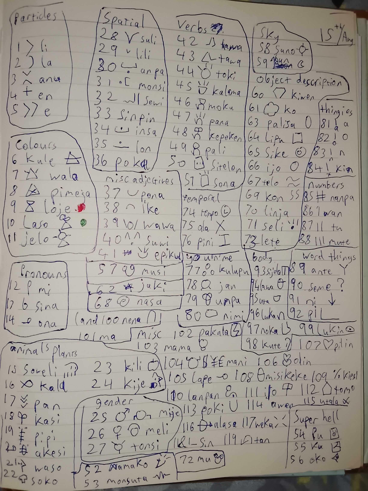

18th aug 2026
i was gunna make this into a yt video but just wanted to get it down quickly
tenpo pini lili la mi kama sona e toki pona: ni li musi a
(lately ive been learning toki pona and its been very fun!)
ive been learning toki pona w my friend eve (wishlist her steam game), ive been meaning to learn for a while (like years) but she motivated me to make the deadline this summer

here you can see an attempt from me to name all the words in the language, i got 119/130-50 ish which is p good for someone who hasnt actively to memorise but just absorbed them and p good that i instantly remembered most the ones i missed minus 6
ni li esun li jasima li kokosila li leko li meso li majuna
(the words for trade, reflection, crocodile(??), square, middle and old
for fun ive tried to translate some friends' names into toki pona then sitelen pona
^scrollable gallery^
im p happy with where i am at with the language, i can use it to message online pretty well
although i suck at listening to people speaking quickly and forming sentences aloud smoothly so ill try get better at that, i also would like to make art (art in the general sense) in it but i have other priorities artistically at the momment that ive been neglecting too much so later
^scrollable gallery^
(counting or not counting gang violence?), (hello person reading. i love krita and nasin nanpa is great for it. people need to use it.)
speaking of making art in it, ive been able to import nasin nanpa into a lot of stuff, like the style.css of this website and libreoffice which is:
musi wawa a
(awesome!)
since im p satisfied with where im at i think ill move onto learning esperanto since dr zamenhof's ideals and beliefs really speak to me and, from what ive gathered, the way certain people describe toki pona as an IAL is actually just what esperanto is
esperanto would also be hardass if i took advantage of its attached philosophies in art and writing, i had a similar-ish reason for learning toki pona but that was more cuz working with limitations is very important to a lot of art style choices so itd fit with a gamejam game or pixel art or low poly game for example
while ive been doing toki pona ive been making some progress on reading and writing in malayalam as i only have native level fluency on understanding (can watch tv shows and movies just fine, but (was) illiterate and can barely speak) and figured spelling would help my pronounciation
i have other major reasons behind learning malayalam fully but one big motivator i have is a story idea i want to be able to execute to the amount it deserves whos themes, setting and morals are extremely mallu in nature and i want to be able to do it in malayalam for that reason
നിങള് മനോഹറൊമായ
(your amazing)
also been thinking about trying to learn more languages in the future, esperanto n toki pona were constructed to be easy and malayalam is just me finishing on what i shouldve been native level at, so easy way out 3 times in a row but its still taking effort out of me so maybe this could lead to me learning a language thatd be harder for me?
maybe just whatever interests me at the time, maybe ill try do all the major other dravidian languages (tamil is closest to malayalam conversationally so another easy way out lol), language a hypothetical partner or close friend speaks, or shocker maybe just plain practical language with lots of job opportunities (but i already know THE practical language so doesnt really appeal to me over trying to understand a culture or philosophy and the artistic value of that understanding)
ഞാൻ എപ്പോൾ ഉരണങ്ങും
mi kama lape tenpo pi(lon poki)
(im going to sleep now)
omg its like 1 am i need to write earlier in the day